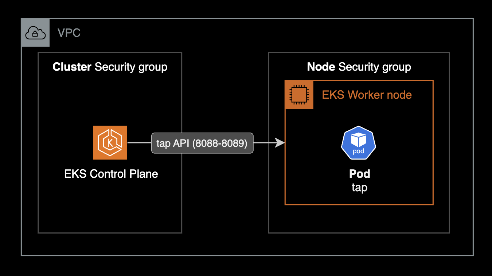
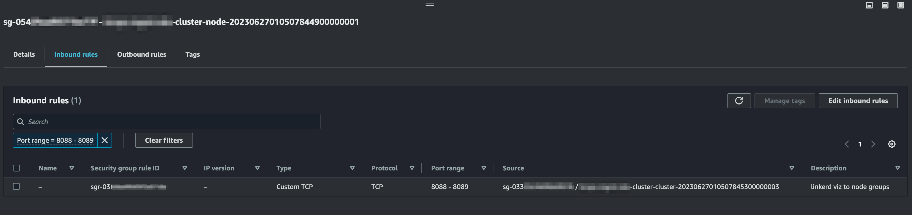

viz websocket close error
개요
linkerd 운영중에 viz에서 발생한 Websocket close error [1011: Internal Error] 에러 메세지에 대한 해결방법을 기록한 페이지입니다.
배경지식
viz
viz는 Linkerd 서비스 메쉬의 트래픽과 성능을 눈으로 쉽게 볼 수 있게 해주는 확장 기능Extension입니다.
이를 통해 서비스 간의 연결 상태와 성능을 한눈에 파악할 수 있어 문제를 빨리 찾고 해결할 수 있습니다. Kiali와 비슷한 역할을 하지만, Kiali는 주로 Istio와 함께 사용되고 Linkerd-viz는 Linkerd와 함께 사용된다는 차이점이 있습니다.
환경
- EKS
- EKS v1.29 : EKS terraform module을 사용하여 배포됨
- Linkerd
- Linkerd controlplane edge-24.5.3:
linkerdCLI를 사용해서 설치됨 - Linkerd dataplane edge-24.5.3
- Linkerd viz edge-24.5.3: 공식 헬름차트로 설치됨
- Linkerd controlplane edge-24.5.3:
증상
linkerd-viz 대시보드 웹에 접속해서 사용시 아래와 같은 Websocket close error [1011: Internal Error]가 지속적으로 발생하는 문제가 있습니다.
An error has occurred.
Websocket close error [1011: Internal Error] : HTTP error, status Code [503] (unexpected API response: service unavailable )
위와 같은 에러 메세지를 포함한 경고 팝업을 linkerd-viz 대시보드를 사용하는 모든 사용자에게 표출하게 되어 사용이 매우 불편해졌습니다.
linkerd check 명령어로 링커드 설치 상태를 먼저 확인했습니다.
당시 linkerd-viz 상태 체크 과정에서 아래와 같은 에러 메세지가 나타났습니다.
$ linkerd check
...
‼ tap API service is running
FailedDiscoveryCheck: failing or missing response from https://<REDCATED>:8089/apis/tap.linkerd.io/v1alpha1: Get "https://<REDCATED>:8089/apis/tap.linkerd.io/v1alpha1": dial tcp <REDCATED>:8089: i/o timeout
see https://linkerd.io/2.15/tasks/troubleshooting/#l5d-tap-api for hints
tap API service is running 체크 항목에서 위와 같이 응답을 받지 못해 실패했습니다.
원인
EC2 워커노드의 SG에서 인바운드룰 추가 설정이 누락되었습니다.
Linkerd troubleshooting 공식문서에 의하면 EKS 컨트롤플레인kube-apiserver에서 tap 서버로 연결할 수 있어야 합니다.

상세 해결방법
linkerd-viz 헬름 차트가 EKS 클러스터에 설치되어 있습니다.
$ helm list -n linkerd-viz
NAME NAMESPACE REVISION UPDATED STATUS CHART APP VERSION
linkerd-viz linkerd-viz 2 2024-05-21 11:55:07.180595 +0900 KST deployed linkerd-viz-0.0.0-undefined edge-XX.X.X
web 파드의 호스트 헤더 필터링 인자는 다음과 같이 linkerd-viz 헬름 차트의 기본값으로 설정되어 있습니다.
# web deployment yaml
- args:
- -linkerd-metrics-api-addr=metrics-api.linkerd-viz.svc.cluster.local:8085
- -cluster-domain=cluster.local
- -controller-namespace=linkerd
- -log-level=info
- -log-format=plain
- -enforced-host=^(localhost|127\.0\.0\.1|web\.linkerd-viz\.svc\.cluster\.local|web\.linkerd-viz\.svc|\[::1\])(:\d+)?$
linkerd-viz 헬름 차트에서는 dashboard.enforcedHostRegexp 값으로 제어하는데 아래와 같이 기본값으로 배포했습니다.
# linkerd2/viz/charts/linkerd-viz/values.yaml
dashboard:
# -- Host header validation regex for the dashboard. See the [Linkerd
# documentation](https://linkerd.io/2/tasks/exposing-dashboard) for more
# information
enforcedHostRegexp: ""
EKS 워커노드 SG의 인바운드 룰에 EKS 컨트롤플레인이 출발지가 되는 TCP/8088, TCP/8089 트래픽을 추가로 허용해야 이 문제를 해결할 수 있습니다.

해당 포트는 linkerd-viz를 구성하는 컴포넌트 중 하나인 tap의 API Server에서 사용하는 포트입니다. 자세한 사항은 Linkerd troubleshooting 공식문서를 참고합니다.
Ingress에 nginx.ingress.kubernetes.io/configuration-snippet 어노테이션을 사용하기 위해서는 nginx-ingress 컨트롤러의 설정에서 먼저 허용해줍니다.
# ingress-nginx/values.yaml
controller:
# -- This configuration defines if Ingress Controller should allow users to set
# their own *-snippet annotations, otherwise this is forbidden / dropped
# when users add those annotations.
# Global snippets in ConfigMap are still respected
allowSnippetAnnotations: true
linkerd-viz에서 사용할 Secret과 Ingress 리소스를 배포합니다.
서비스 메시에서 무슨 일이 일어나고 있는지 확인하고 싶을 때마다 Linkerd viz 대시보드를 사용하는 대신, Ingress 리소스를 통해 linkerd-viz 대시보드를 외부에 노출할 수 있습니다. 대신 클러스터에 ingress-nginx가 이미 설치되어 있어야 합니다.
cat << EOF | kubectl apply -f -
---
# apiVersion: networking.k8s.io/v1beta1 # for k8s < v1.19
apiVersion: networking.k8s.io/v1
kind: Ingress
metadata:
name: web-ingress
namespace: linkerd-viz
annotations:
nginx.ingress.kubernetes.io/upstream-vhost: \$service_name.\$namespace.svc.cluster.local:8084
nginx.ingress.kubernetes.io/configuration-snippet: |
proxy_set_header Origin "";
proxy_hide_header l5d-remote-ip;
proxy_hide_header l5d-server-id;
nginx.ingress.kubernetes.io/proxy-read-timeout: "3600"
nginx.ingress.kubernetes.io/proxy-send-timeout: "3600"
spec:
ingressClassName: nginx
rules:
- host: viz.example.com
http:
paths:
- path: /
pathType: Prefix
backend:
service:
name: web
port:
number: 8084
EOF
ingress-nginx 공식문서에 따르면 NGINX은 웹소켓에 대한 지원을 즉시 제공합니다. 특별한 구성이 필요하지 않습니다. 연결 종료를 방지하기 위한 유일한 요구 사항은 프록시 읽기 시간 초과 및 프록시 전송 시간 초과 값을 늘리는 것입니다.
metadata:
annotations:
nginx.ingress.kubernetes.io/proxy-read-timeout: "3600"
nginx.ingress.kubernetes.io/proxy-send-timeout: "3600"
tap 기능이 이제 정상 동작하는지 확인하기 위해 viz 웹페이지를 새로 고침합니다.
(선택사항) 혹은 linkerd-viz를 구성하는 모든 파드를 재시작합니다.
kubectl rollout restart deployment -n linkerd-viz
deployment.apps/metrics-api restarted
deployment.apps/prometheus restarted
deployment.apps/tap restarted
deployment.apps/tap-injector restarted
deployment.apps/web restarted
linkerd check 명령어로 잠재적인 문제가 있는지 Linkerd 설치 상태를 확인합니다.
$ linkerd check
kubernetes-api
--------------
√ can initialize the client
√ can query the Kubernetes API
kubernetes-version
------------------
√ is running the minimum Kubernetes API version
linkerd-existence
-----------------
√ 'linkerd-config' config map exists
√ heartbeat ServiceAccount exist
√ control plane replica sets are ready
√ no unschedulable pods
√ control plane pods are ready
√ cluster networks contains all pods
√ cluster networks contains all services
linkerd-config
--------------
√ control plane Namespace exists
√ control plane ClusterRoles exist
√ control plane ClusterRoleBindings exist
√ control plane ServiceAccounts exist
√ control plane CustomResourceDefinitions exist
√ control plane MutatingWebhookConfigurations exist
√ control plane ValidatingWebhookConfigurations exist
√ proxy-init container runs as root user if docker container runtime is used
linkerd-identity
----------------
√ certificate config is valid
√ trust anchors are using supported crypto algorithm
√ trust anchors are within their validity period
√ trust anchors are valid for at least 60 days
√ issuer cert is using supported crypto algorithm
√ issuer cert is within its validity period
√ issuer cert is valid for at least 60 days
√ issuer cert is issued by the trust anchor
linkerd-webhooks-and-apisvc-tls
-------------------------------
√ proxy-injector webhook has valid cert
√ proxy-injector cert is valid for at least 60 days
√ sp-validator webhook has valid cert
√ sp-validator cert is valid for at least 60 days
√ policy-validator webhook has valid cert
√ policy-validator cert is valid for at least 60 days
linkerd-version
---------------
√ can determine the latest version
√ cli is up-to-date
control-plane-version
---------------------
√ can retrieve the control plane version
√ control plane is up-to-date
√ control plane and cli versions match
linkerd-control-plane-proxy
---------------------------
√ control plane proxies are healthy
√ control plane proxies are up-to-date
√ control plane proxies and cli versions match
linkerd-extension-checks
------------------------
√ namespace configuration for extensions
linkerd-viz
-----------
√ linkerd-viz Namespace exists
√ can initialize the client
√ linkerd-viz ClusterRoles exist
√ linkerd-viz ClusterRoleBindings exist
√ tap API server has valid cert
√ tap API server cert is valid for at least 60 days
√ tap API service is running
√ linkerd-viz pods are injected
√ viz extension pods are running
√ viz extension proxies are healthy
√ viz extension proxies are up-to-date
√ viz extension proxies and cli versions match
√ prometheus is installed and configured correctly
√ viz extension self-check
Status check results are √
기존에는 tap API service is running 체크항목에 문제가 발생했었으나 이제는 linkerd-viz에 대한 설치상태 확인이 모두 정상적으로 표시되는 걸 확인할 수 있습니다.
참고자료
Linkerd
Exposing the Dashboard
Linkerd-viz Tap FailedDiscoveryCheck while Running on EKS
Securing Linkerd Tap
Linkerd troubleshooting